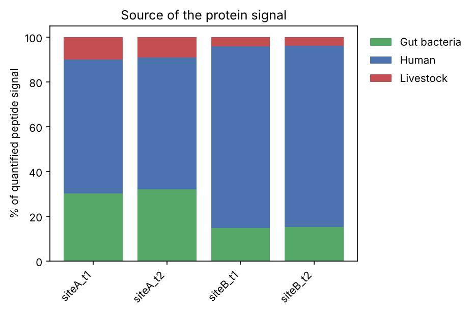
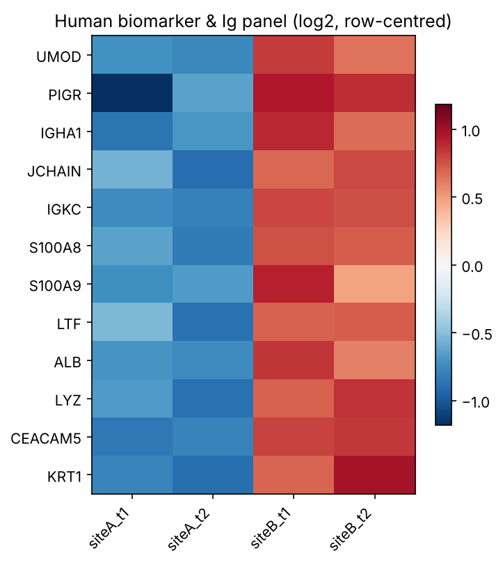
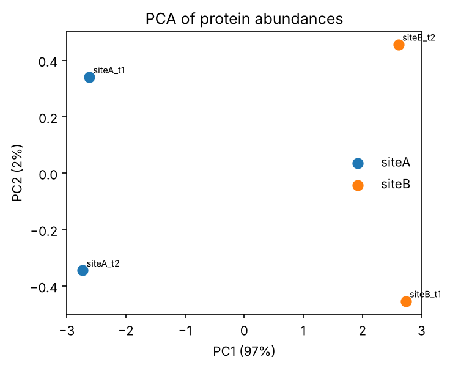
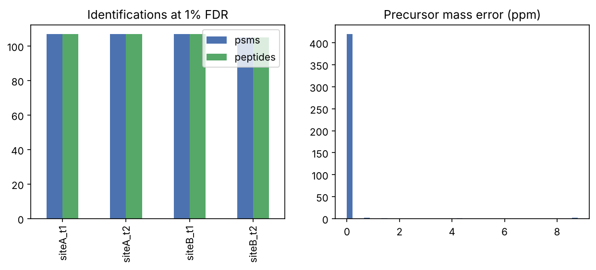
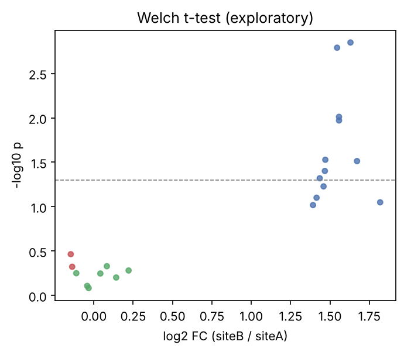

Workflow
Every step runs as a Nextflow process. The database and the biomarker panel are plain TSV files in assets/, so they can be changed without touching code.
fetch_pride.pyThermoRawFileParserbuild_db.pySageanalyze.pyanalyze.pyanalyze.pyanalyze.pyQuestions it answers
Where does the protein come from?
Share of the quantified signal from human, gut bacteria, livestock and rodent proteins, counting only peptides whose matches all agree on the source.
Which human markers are measurable?
Uromodulin and albumin (urine), calprotectin and lactoferrin (gut inflammation), and a secretory IgA / immunoglobulin block for immunoproteomics.
Do sites or dates differ?
PCA and an exploratory Welch t-test with Benjamini–Hochberg correction whenever there are at least two groups of two samples.
Public data
Default input: a small, evenly spaced subset of RAW files, so the analysis stays light.
PXD059455 default
Untreated municipal wastewater from two urban locations, sampled over several months (Nov 2023 – Feb 2024), measured on an Orbitrap. Microbial and human proteins.
Your own data
Any Thermo .raw or .mzML, local or by URL. You can also bring your own FASTA and taxonomy map with --fasta and --taxmap.
Search database
UniProt reference proteomes plus cRAP contaminants. minimal (default) = 6 proteomes; full = 12. The build stops if any query returns zero entries.
| Proteome | Organism | Group | Set | UniProt query |
|---|---|---|---|---|
| UP000005640 | Homo sapiens | Human | minimal | proteome:UP000005640 AND reviewed:true |
| UP000000625 | Escherichia coli K-12 | Gut bacteria | minimal | proteome:UP000000625 |
| UP000001414 | Bacteroides thetaiotaomicron VPI-5482 | Gut bacteria | minimal | proteome:UP000001414 |
| UP000006731 | Bacteroides fragilis NCTC 9343 | Gut bacteria | full | proteome:UP000006731 |
| UP000004619 | Faecalibacterium duncaniae A2-165 | Gut bacteria | minimal | proteome:UP000004619 |
| UP000000439 | Bifidobacterium longum NCC 2705 | Gut bacteria | minimal | proteome:UP000000439 |
| UP000001415 | Enterococcus faecalis V583 | Gut bacteria | minimal | proteome:UP000001415 |
| UP000008227 | Sus scrofa | Livestock | full | proteome:UP000008227 AND reviewed:true |
| UP000009136 | Bos taurus | Livestock | full | proteome:UP000009136 AND reviewed:true |
| UP000000539 | Gallus gallus | Livestock | full | proteome:UP000000539 AND reviewed:true |
| UP000002494 | Rattus norvegicus | Rodent | full | proteome:UP000002494 AND reviewed:true |
| UP000000589 | Mus musculus | Rodent | full | proteome:UP000000589 AND reviewed:true |
Biomarker & immunoglobulin panel
Curated human proteins reported per sample (assets/biomarker_panel.tsv).
Population / kidney
Inflammation
Innate immunity
Immunoproteomics
Gut epithelium
Contamination check
Method parameters
| Search engine | Sage (open source, fragment-index search) |
|---|---|
| Enzyme | Trypsin/P, up to 2 missed cleavages, 7–30 aa |
| Precursor / fragment tolerance | ±10 ppm / ±20 ppm |
| Modifications | Carbamidomethyl C (fixed, optional) · Oxidation M (variable) |
| FDR | Target-decoy (reversed), 1% at PSM and peptide level |
| Quantification | MS1 label-free (Sage LFQ); protein = mean of Top3 unique peptides |
| Protein reporting | ≥ 2 unique peptides, no razor peptides |
| Taxonomy | Peptide → organism / group when all matches agree; otherwise ambiguous |
| Statistics | PCA (left-censored imputation) · Welch t-test + Benjamini–Hochberg |
| Default subset | 6 RAW files from PRIDE, ≤ 3000 MB each |
Example output
Synthetic data. The figures below come from -profile test, which builds random protein sequences and simulated spectra. They show the pipeline working end to end, not real wastewater biology.





Outputs
| File | Content |
|---|---|
report.html | Self-contained report with every figure and table |
qc_per_sample.tsv | PSMs and peptides at FDR, mass error, missed cleavages |
peptide_taxonomy.tsv | Specificity of each peptide and the organism or group it points to |
taxonomic_composition_pct.tsv | % of the quantified signal by source |
protein_matrix.tsv | Top3 intensities per protein and sample |
biomarker_panel.tsv | Human biomarker and immunoglobulin panel |
diff_<g2>_vs_<g1>.tsv | log2FC, p-value, BH q-value |
database/db_manifest.tsv | Entries per proteome actually downloaded |
How to run
# synthetic test (no download)
nextflow run kurisutina132/wastewater-proteomics-nf -profile test,conda
# public wastewater data: 6 RAW files from PRIDE
nextflow run kurisutina132/wastewater-proteomics-nf -profile conda \
--pride PXD059455 --max_files 6
# your own samples
nextflow run kurisutina132/wastewater-proteomics-nf -profile conda \
--samplesheet samplesheet.csvLimitations
- A small curated database separates human, animal and bacterial signal but under-represents microbial diversity. Bacterial identifications are a lower bound.
- "Organism-specific" means specific within this database, not across all of UniProt.
- With a few files per group the statistics are exploratory and generate hypotheses, not findings.